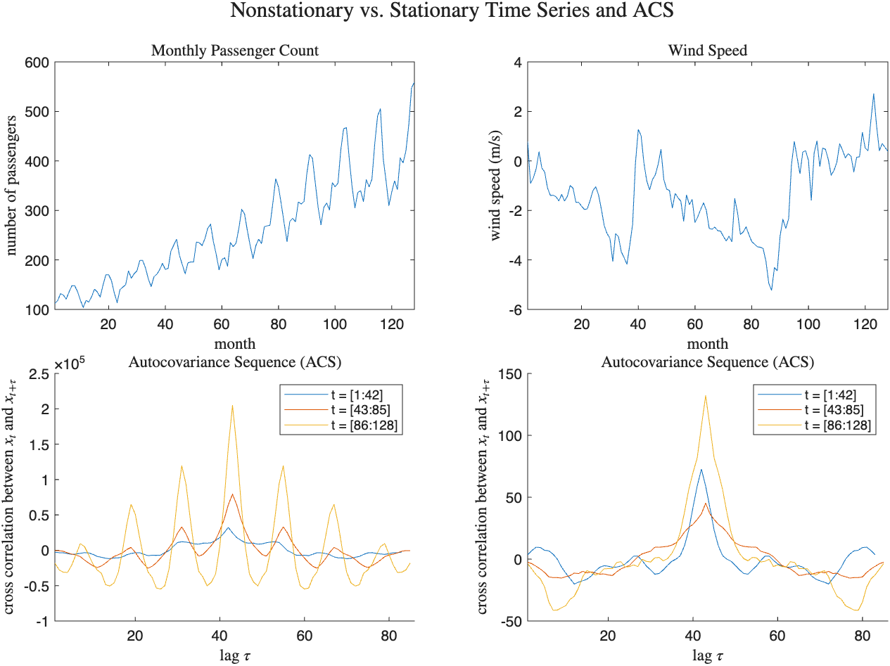
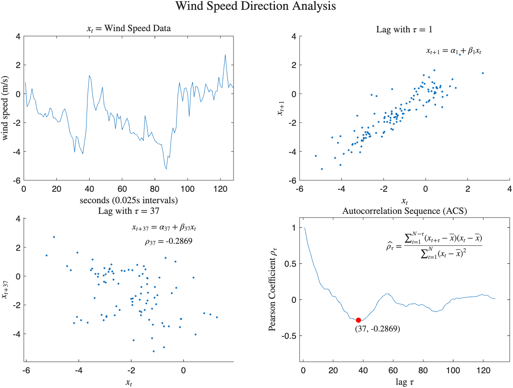
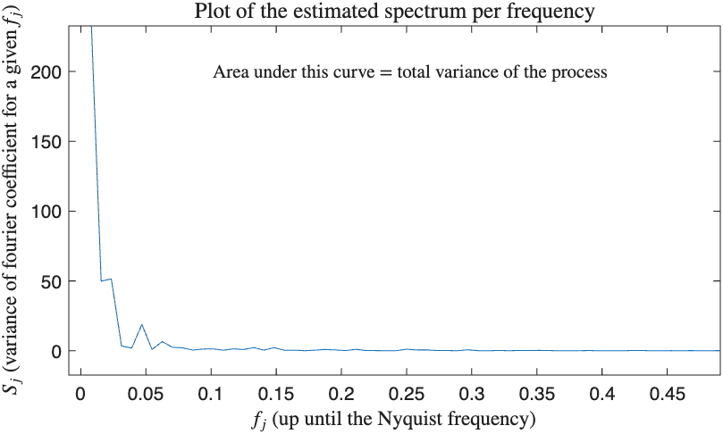
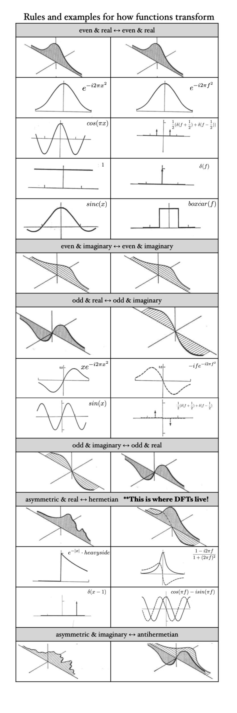

Spectral analysis gives us a new lense for analyzing ordinary time series data. On this page, we will be focusing on nonparametric spectral estimation as defined in "Spectral Analysis for Univariate Time Series" by Percival & Walden (2020). Below are some notable example applications:
We will begin with the definition of a discrete time series $\{x_t\}$. This is merely a sequence of numbers (data) with some ordering. It is considered one realization of a true stochastic process $\{X_t\}$. We typically assume our time series is stationary (specifically, we will focus on weak (second order) stationarity). I like to think of the test of stationarity as looking through binoculars. If no matter where you look the overall statistics don't really change (up to the second moment for our purposes), then you have weak stationarity. In addition, we have a notion of ergodicity meaning that one realization of the data can tell us all we need to know. Here is a diagram that illustrates a non-stationary sequency. You can see the statistics start to grow over time. Each color is a different splice of the time axis.

Wherever possible on this page, I will be using wind speed direction data for demonstrataion purposes. In the upper left corner of the figure below, we see the wind speed data time series. By default, MATLAB connects lines through points, otherwise one would see discrete points. If we assume a linear relationship between elements of the time series then we can use a powerful summary statistic to analyze relationships within the time series. The following is the sampled autocorrelation sequence (ACS):
$\hat{\rho}_{\tau} = \frac{\sum_{t = 0}^{N - \tau - 1}(x_{t + \tau} - \bar{x})(x_{t} - \bar{x})}{\sum_{t = 0}^{N - 1}(x_{t} - \bar{x})^2}$Note that at lag $\tau = 0$, the ACS evaluates to 1. This is a dimensionless quantity between [-1, 1]. Since it is dimensionless, it is used for model identification (i.e. you look at the normalized function and ask "what model fits this data?"). As $\tau$ increases the numerator will be based on fewer and fewer terms (i.e. plots like the bottom left hand corner will have fewer and fewer points). This can make the estimator noisier. As the number of points $N$ increases, the sampled ACS converges to the theoretical autocorrelation sequence :
$\rho_{\tau} = \frac{E\{(X_{t + \tau} - \mu)(X_{t} - \mu)\}}{\sigma^2}$
The ACS is really a normalized version of what is called the autocovariance sequence (ACVS):
$\gamma(\tau) = E\{(X_{t + \tau} - \mu)(X_{t} - \mu)\}$Notice the subtle fact that I slipped in that the zeroth term of the ACVS is the variance. The ACVS has dimensions. In order to get the spectrum, we transform the ACVS.
I will now define some basic facts about random variables (RVs). The following definition will be essential for our understanding of fourier series and transforms in the next section:
$X_t = \mu + \Sigma_{j = 1}^{\lfloor N/2 \rfloor} [A_j cos(2\pif_jt)+ B_jsin(2\pif_jt)]$ where $t = 1, ..., N-1$ and $f_j = j /N$Note that the coefficients A and B are random variables themselves with expectation 0 at all frequencies but a variance that can be different at each frequency:
$E\{A_j\} = E\{B_j\} = 0$ and $E\{A_j^2\} = E\{B_j^2\} = \sigma_j^2$You can read the variances of the amplitudes as "at the jth frequency, how much we'd expect the amplitudes to vary is $\sigma_j^2$". Sometimes, we actually relabel $\sigma_j^2$ as the spectrum at a given frequency (i.e. $S_j = \sigma_j^2$). Summing over all frequency variances, we return the variance of the process:
$\Sigma_{j = 1}^{\lfloor N/2 \rfloor} S_j = \sigma^2$Why do we need this? The spectrum tells us how the variance of the process is distributed across frequencies! Note that since we are working with discrete data points in our wind speed time series, we are not able to know the true spectrum because it relies on an underlying stochastic process. Therefore, we MUST estimate it. You will discover this on your own relatively quickly because you won't be able to construct an expression for $X_t$ without knowing the true frequency components. The following plot was made by estimating the spectrum with a periodogram (more on the mathematics of that in Ch. 6):

Looking at this plot, we are able to infer that most of the variability comes from the low frequency intervals (slow oscillations).

The FFT algorithm is incredibly powerful. Its magic lies in a divide-and-conquer approach that reduces the complexity depth to $O(log(n))$ by cutting the problem in half at each step.